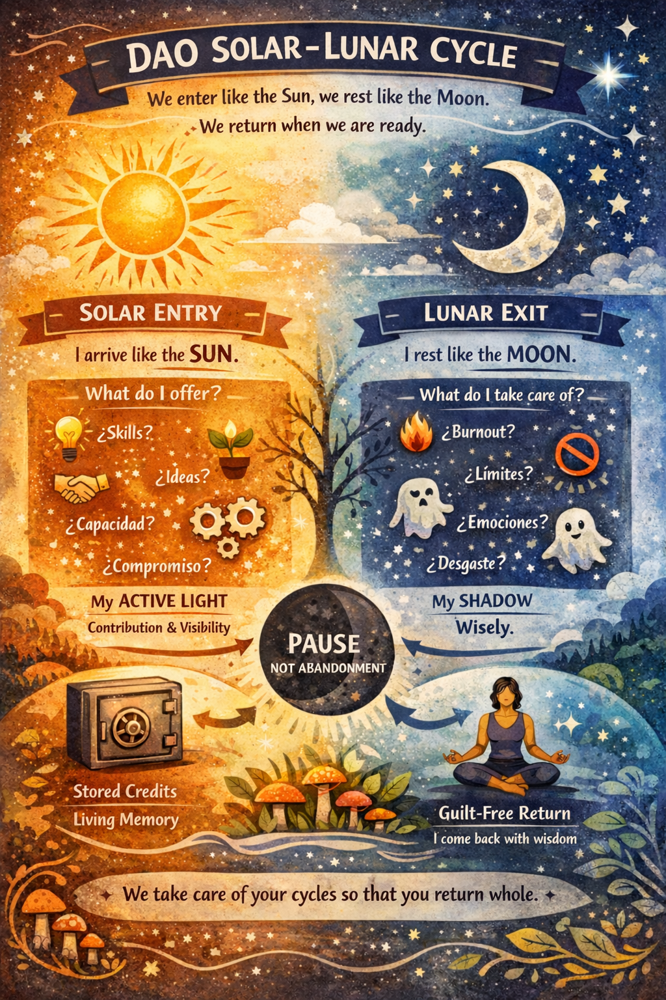

🌞 Solar Entry / 🌙 Lunar Exit Explained
This DAO works like a living organism, respecting human energy cycles. Members don’t burn out or disappear — they follow active and rest phases.
Solar Entry
Members join as the Sun: active, contributing ideas, skills, and presence. Roles are clearly defined and contributions are fully integrated into DAO governance.
Lunar Exit
When members need a break, they enter a Lunar Phase: pausing active roles, transferring responsibilities, and storing contributions safely. They can return later fully ready to contribute.
This system ensures stability for the DAO and confidence for investors: even if key members pause, the project continues smoothly, and all contributions are preserved.
💬 Example Conversation
Investor Ana:
Hi Juan, I'm interested in investing in your DAO, but I'm worried what happens if key members step back.
Juan (DAO Member):
I understand, Ana. We use a system called Solar Entry / Lunar Exit.
Ana:
Solar Entry? Lunar Exit?
Juan:
When someone joins, they arrive as the Sun 🌞: contributing energy, ideas, and time. That’s the Solar Entry.
Ana:
And if someone needs to pause?
Juan:
They enter the Lunar Phase 🌙. They pause active roles, transfer responsibilities, and their contributions are safely stored in the DAO vault. They can return later without losing any work.
Ana:
So the DAO keeps running even if someone is resting?
Juan:
Exactly. Nothing is lost, and your investment is protected. Members return ready and energized to contribute again.